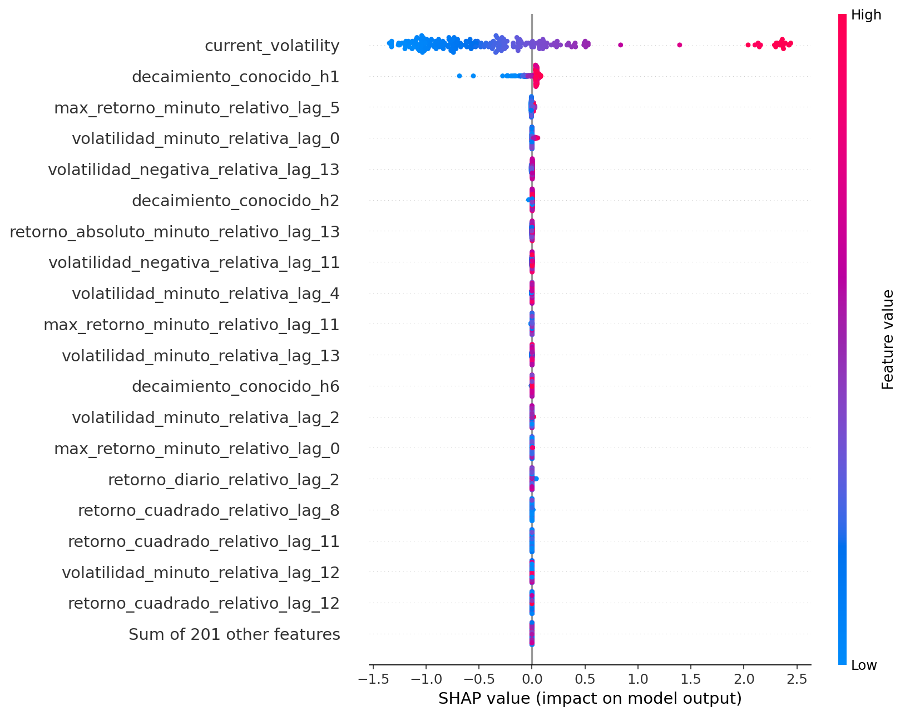
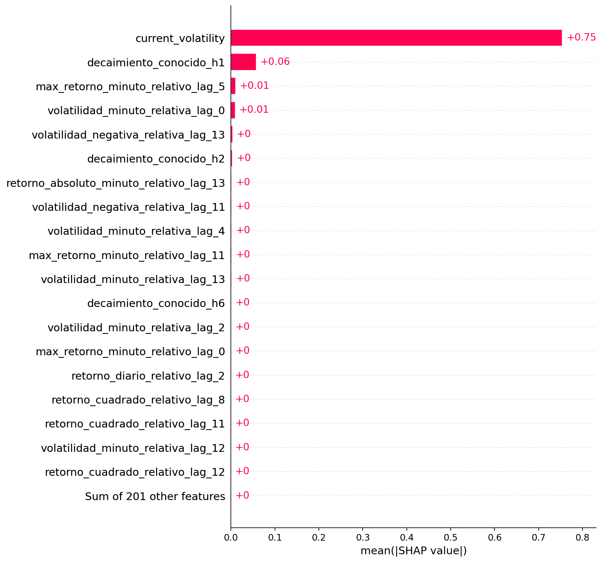
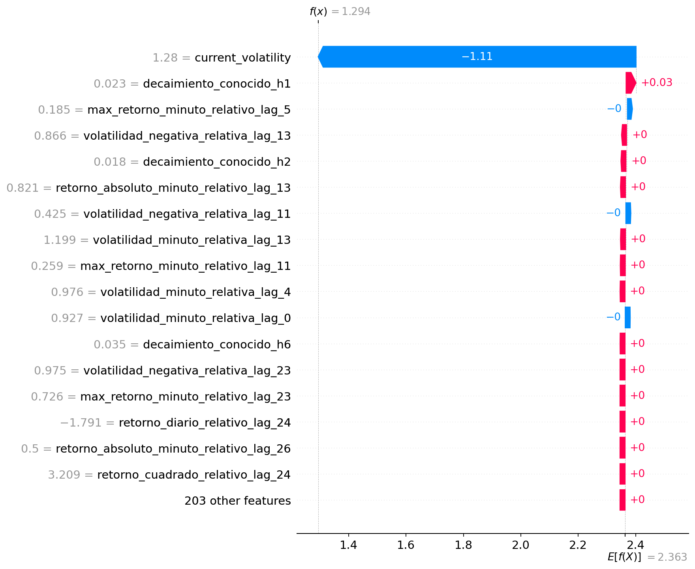
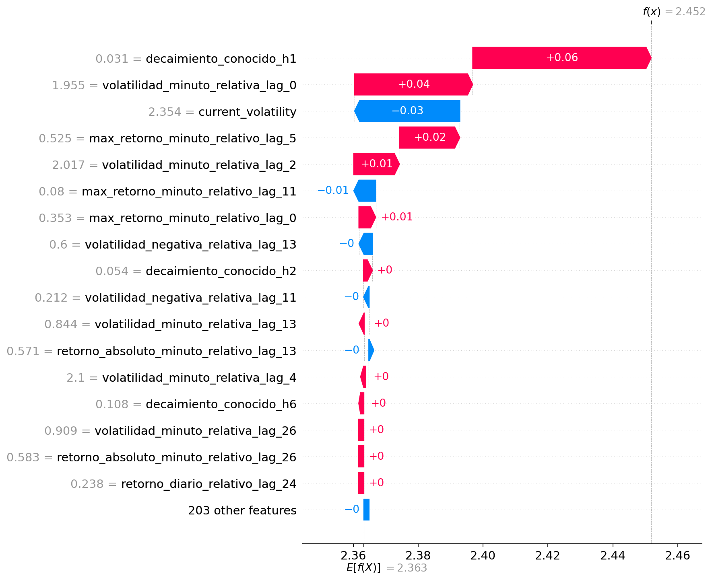
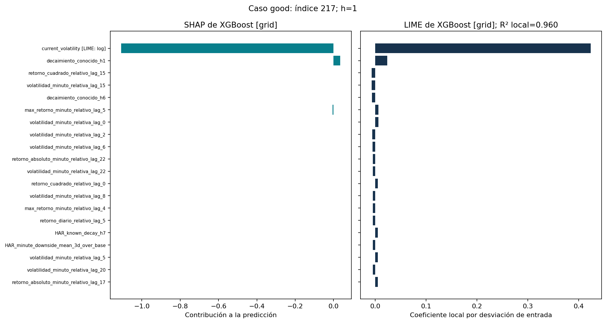
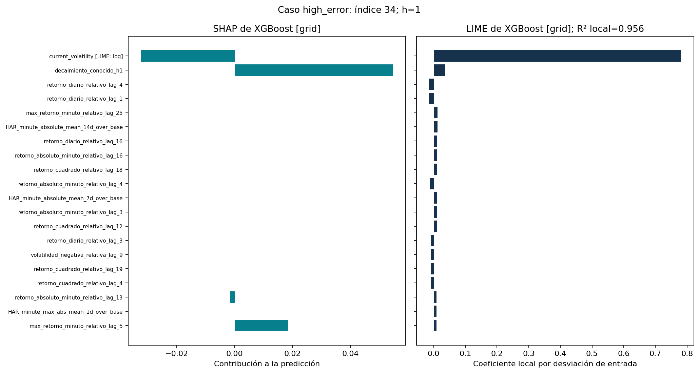

Horizonte 1; 236 de 236 observaciones; 220 entradas; fondo de 8 filas exclusivamente de entrenamiento. Semilla: 42.
Shapley distribuye la diferencia respecto al valor de referencia entre variables. Eficiencia/aditividad exige que las atribuciones sumen esa diferencia; simetría y aditividad caracterizan el reparto teórico. Aquí se aproxima con permutaciones y se comprueba la suma.
Error máximo de aditividad: 8.88e-16.
| case | evaluation_index | observed | hybrid_prediction | hybrid_absolute_error | lime_model | lime_model_prediction | lime_surrogate_prediction | lime_surrogate_absolute_gap | lime_weighted_local_r2 | absolute_importance_rank_correlation_shap_lime |
|---|---|---|---|---|---|---|---|---|---|---|
| good | 217 | 1.293629 | 1.293829 | 0.000201 | XGBoost [grid] | 1.294897 | 1.353740 | 0.058843 | 0.960118 | 0.124102 |
| high_error | 34 | 3.759790 | 2.451843 | 1.307947 | XGBoost [grid] | 2.440101 | 2.543213 | 0.103112 | 0.956498 | 0.043638 |
Las explicaciones describen predicciones del estimador congelado; no prueban causalidad ni mejora predictiva.
El enmascaramiento SHAP independiente y las perturbaciones gaussianas LIME pueden crear combinaciones fuera del soporte, especialmente entre características derivadas o correlacionadas.
SHAP aproxima valores de Shapley con permutaciones; la aditividad se verifica, pero por sí sola no garantiza convergencia de cada atribución.
La referencia SHAP es el promedio del modelo sobre un fondo de entrenamiento; LIME ajusta una regresión local ponderada. Sus magnitudes y referencias no son equivalentes.
Los casos de menor/mayor error se eligen retrospectivamente para explicar; no intervienen en el entrenamiento ni en selección de hiperparámetros.
La fidelidad R² de LIME corresponde a su vecindario sintético, no a R² predictivo fuera de muestra.
LIME perturba en coordenadas logarítmicas las entradas de soporte positivo y las reconstruye antes de llamar al modelo. Sus coeficientes corresponden a esas coordenadas; SHAP conserva entradas originales.






LIME: caso de menor error | LIME: caso de error alto
Referencias: SHAP PermutationExplainer LIME TabularExplainer SHAP paper LIME paper
HAR-XG [bayesian]; BTCUSDT, w=21, h=1. Procedimiento elegido por MSE externo de 2024, sin métricas de prueba. Elegir entre procedimientos mediante su media externa añade selección: esa media seleccionada no es una estimación independiente del ganador.
| case | origin | target_date | hybrid_absolute_error |
|---|---|---|---|
| good | 2026-08-06 00:00:00+00:00 | 2026-08-07 00:00:00+00:00 | 0.000201 |
| high_error | 2026-02-04 00:00:00+00:00 | 2026-02-05 00:00:00+00:00 | 1.307947 |
Ambos predictores joblib reproducen sus siete pronósticos guardados y los objetivos en todas las fechas explicadas.
| model | origins | horizons | max_absolute_replay_error | max_absolute_actual_error | atol | rtol |
|---|---|---|---|---|---|---|
| HAR-XG [bayesian] | 236 | 7 | 8.881784e-16 | 8.881784e-16 | 1.000000e-12 | 1.000000e-12 |
| XGBoost [grid] | 236 | 7 | 8.881784e-16 | 8.881784e-16 | 1.000000e-12 | 1.000000e-12 |